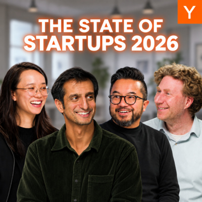

מה YC רואה בסטארטאפים של 2026
פחות אנשים, יותר אטומים, מהר יותר להכנסות: הנתונים החדשים של YC מציירים מחדש את החברה שאפשר לבנות עכשיו.

1. המעבר הגדול הוא מ־bits לאטומים
הנתון הבולט ביותר בפרק הוא לא עוד עלייה בשימוש ב־AI. זו התרחבות דרמטית של חברות שבונות בעולם הפיזי. לפי הניתוח של YC, שיעור חברות ה־hard tech עלה מ־8% לכ־20% מהחברות שהתקבלו בתקופה האחרונה.
העלייה מופיעה כמעט בכל שכבה של המערכת: רובוטיקה גדלה מכ־1% לכ־6%–7% מהמחזור; ייצור תעשייתי מכ־4% לכ־10%; ביטחון מכ־1.5% לכ־5%; שבבים ופוטוניקה מכ־1% לכמעט 4%; ותשתיות אנרגיה מכ־1% לכמעט 3%. בקטגוריות האלה, לפי YC, השיעור שילש ולעיתים אף חימש את עצמו.
לכאורה, AI אמור להפוך תוכנה לקלה וזולה יותר ולכן למשוך עוד יזמים למסכים. בפועל, הוא עושה גם את ההפך. מערכות יצירת קוד וכלי מחקר מורידים את מחיר רכיב התוכנה בתוך מוצר פיזי מורכב. חברה שבונה לוויין, רובוט, שבב או מערכת ביטחונית עדיין צריכה מומחיות עמוקה, שרשרת אספקה וניסויים בעולם האמיתי. אבל היא כבר לא חייבת לגייס אלף מהנדסי תוכנה כדי לבנות את כל השכבות שסביב הליבה.
זה מסביר גם מדוע אחד מכל שישה מייסדים במחזור הקיץ, לפי הפרק, הוא בעל דוקטורט. כשבונים פוטוניקה, סיליקון, רובוטיקה או תשתית אנרגיה, ידע מחקרי הוא לא קישוט. הוא חומר הגלם.
2. החלל, הביטחון והייצור יוצרים זה לזה שוק
הפאנל מזהה שלושה כוחות מאקרו שמאיצים את החזרה לאטומים. הראשון הוא הצלחת חברות חלל גדולות, שיצרה דור חדש שרוצה לבנות את כל הערימה סביב חלל מסחרי. בפרק מובאות כדוגמאות חברה שעובדת על חלופת תקשורת לוויינית ריבונית וחברה שבונה פאנלים סולאריים ללוויינים ולתשתיות עתידיות בחלל.
הכוח השני הוא ביטחון. דור של מייסדים גדל כשהמלחמה והרחפנים נמצאים במרכז סדר היום, ורוצה לבנות פתרונות במקום להסתפק בפרשנות. בפרק מתוארות, בין היתר, חברה שעובדת על כלי טיס סולארי למשימות תצפית ותקשורת ומערכת הגנה נגד רחפנים עבור כוחות מיוחדים. אלה טענות ודוגמאות של משתתפי הפודקאסט, לא בדיקה עצמאית של החברות או החוזים.
הכוח השלישי הוא שרשרת האספקה שנוצרת מסביב. אחת הדוגמאות בפרק היא חברה שמנסה לבנות מחדש ייצור מתכת בארצות הברית. לקוחותיה הם לעיתים חברות ביטחוניות צעירות שצריכות ספק המסוגל לזוז בקצב שלהן. האנלוגיה של הפאנל היא Stripe בראשית עידן ה־Web 2.0: אפשר היה לעבוד עם ספק תשלומים ותיק, אבל חברה חדשה שנבנתה לאותו דור מוצר הייתה מהירה ונוחה בהרבה. כעת אותו דפוס מופיע במתכת, מפעלים, רכיבים ולוגיסטיקה.
3. גם ה־AI עצמו הוא תעשייה פיזית
קל לדבר על מודלים כאילו הם תוכנה טהורה. בפועל, ביקוש ל־AI הופך את המחשוב לפרויקט תשתית: קרקע, מרכזי נתונים, חשמל, סוללות, קירור, שבבים, קישוריות ובנייה. משתתפי הפאנל טענו שאפילו מחיר ההשכרה השעתי של Nvidia A100 ישן עלה בגלל עודף ביקוש ומחסור בהיצע. בפרק לא נמסרו ספק, אזור או תקופת השוואה, ולכן נכון לקרוא זאת כאינדיקציה שלהם ללחץ בשוק, לא כמדד שוק מאומת.
בצד השבבים הוזכרו חברות שמפתחות מעבדים חדשים וארכיטקטורה טרינרית. ההיגיון: עומסי AI יכולים לפעול בייצוגים דלי־דיוק, ולכן יש מקום לארכיטקטורות ייעודיות שחוסכות אנרגיה ועלות. הדיון בפרק מפשט את המעבר בין פורמטי החישוב, ומאיצים מודרניים תומכים למעשה בכמה רמות דיוק במקביל.
דוגמה נוספת היא חברה שבונה מתג אופטי מלא להעברת מידע בין מעבדים גרפיים. ככל שה־GPU משתפר, המתג האלקטרוני המחבר בין יחידות המחשוב עלול להפוך לצוואר בקבוק. מעבר לפוטונים לאורך כל הדרך עשוי לאפשר למרכז הנתונים לנצל טוב יותר את כוח החישוב שכבר קנה.
4. הרובוטיקה מתקרבת לרגע ה־ChatGPT שלה, אבל עדיין לא הגיעה
YC רואה חברות בכל שכבה של הרובוטיקה: רובוטים אנכיים לענפים מסוימים, תשתיות פריסה, איסוף נתונים ומעבדות שמאמנות מודלים חדשים. התחושה היא שרגע פריצה מתקרב, אך המשתתפים מדגישים שהוא עדיין אינו כאן. הם מזכירים קפיצה חדה בביצועי מודלים חדשים על מבחני רובוטיקה, אך גם מודים שאינם בטוחים בפרטי הבנצ'מרק. לכן נכון לקרוא זאת כאינדיקציה למומנטום, לא כהוכחה מדעית.
הבעיה הקשה אינה רק ״אינטליגנציה כללית לרובוט״. העולם הפיזי מלא דרגות חופש, חריגים וסיכוני זמן אמת. רובוט שמחבר כבלים במרכז נתונים אינו יכול לחשוב כמה דקות ולחזור עם תשובה. הוא חייב להגיב מיד, להבין שמישהו הזיז אותו ולהימנע מחיבור שגוי.
לכן הפאנל מעריך שמודלים אנכיים וכוונון על נתונים ספציפיים יהיו חשובים במיוחד. כדוגמאות הוזכרו רובוטים לעבודות כבלים במרכזי נתונים ומערכת שמתחילה ממודל בסיס ומשתמשת באלפי שעות של וידאו כדי להשתפר בהכנסת פריטים לקופסאות. מודל כללי הוא נקודת פתיחה. המוצר נולד מהנתונים הפרטיים ומההתאמה לסביבה אחת אמיתית.
5. SaaS לא מת. הוא חייב להפוך ממערכת תיעוד למערכת פעולה
הפרק אינו מציג את חזרת החומרה כהלוויה לתוכנה. מניות SaaS מסוימות התאוששו, ו־Salesforce ו־Snowflake מובאות כדוגמאות לחברות שהראו עוצמה. הטענה המדויקת יותר היא שסוג התוכנה בעל הערך משתנה.
בעולם הישן, מערכת תיעוד שמרה את נתוני העבודה: לקוחות, משימות, חוזים, פניות או תשלומים. אדם נכנס אליה, קרא וכתב, ואז ביצע את העבודה. בעולם הסוכנים, מערכת כזאת ניצבת בפני בחירה. היא יכולה לחשוף את הנתונים דרך MCP ולהסתכן בכך שהממשק והערך יעברו למקום אחר, או להפוך בעצמה ל־harness, הסביבה שבתוכה הסוכן קורא, כותב ומבצע את העבודה.
Slack ו־Salesforce נהנות כאן מיתרון אפשרי: הן כבר מחזיקות את ההקשר שבו אנשים משתפים פעולה ואת המידע הארגוני שסוכנים צריכים. אבל ההגנה הזאת נשמרת רק אם המערכת הופכת למקום שבו העבודה מתרחשת, לא למחסן פסיבי שסוכן חיצוני מרוקן.
6. החברה החדשה מוכרת תוצאה, לא מושב
השינוי הזה כבר נראה בנתוני המחזור. שיעור החברות שמטפלות במשימה שלמה מקצה לקצה עלה, לפי YC, מכ־10% ליותר מ־25%. אלה אינן רק אפליקציות שמארגנות מידע. הן פועלות כברוקר ביטוח, מבצעות קליטה קלינית, מטפלות בחיוב רפואי או מסיימות workflow מלא.
במקביל, ההכנסה החודשית החציונית בסוף המחזור קפצה מכ־8,000 דולר לכ־20,000 דולר, אף שהחברה החציונית מתקבלת כשהיא עדיין קרובה לאפס הכנסות. המשתתפים מכירים בכך שחלק מהביקוש עשוי להיות הייפ של AI. אבל תזת השור היא פשוטה יותר: מוצר שמבצע עבודה שלמה שווה ללקוח יותר ממערכת שרק מתעדת אותה, ולכן אפשר למכור אותו בסכום גבוה יותר ומוקדם יותר.
Juicebox מדגימה את המעבר. המוצר התחיל כחיפוש מועמדים מבוסס מודלי שפה: הלקוח תיאר את האדם שהוא רוצה לגייס וקיבל פרופילים רלוונטיים. הסוכן החדש כבר יוצר קשר עם מועמדים ומקדם את התהליך. לפי הפאנל, השינוי עשוי להכפיל או לשלש את ההכנסה מכל לקוח. זה לא בהכרח מבטל את המגייס. הוא מסיר את הפנייה החוזרת למאות מועמדים ומשאיר לבני האדם שיפוט, התאמה תרבותית והיכרות.
התוצאה הקיצונית ביותר היא מהירות. ב־YC אומרים שהם רואים לראשונה חברות שעוברות מאפס ל״הכנסה בת שבע ספרות״ בתוך שלושה חודשים, מסלול שבעבר היה לוקח 18 חודשים ויותר. בפרק לא הובהר אם מדובר בהכנסה בפועל, בקצב שנתי, בחוזים או ב־bookings. הסבר אחד הוא ביקוש אמיתי. אחר הוא בשלות מוצר: מייסדים שמנהלים עשרות סוכני קוד במקביל יכולים להגיע בתוך שבועות למוצר שפעם דרש צוות וזמן.
7. מוכרי האתים החדשים: נתונים וסביבות RL
לצד האפליקציות עצמן נוצר שוק עצום ושקט יחסית: חברות שמוכרות למעבדות AI נתונים, משימות אימון וסביבות ללמידת חיזוק. לפי YC, בתוך שנתיים היא מימנה יותר מתריסר חברות שכל אחת מהן מכניסה מעל 10 מיליון דולר בשנה בקטגוריה הזאת; חלקן, לטענת המשתתפים, כבר במאות מיליוני דולרים.
ההיגיון ברור. חישוב הוא רק רגל אחת של חוקי הסקיילינג. כדי להפוך מודל לטוב יותר בפיננסים, קוד, רובוטיקה או משימות ארוכות, צריך סביבה שמייצרת משימות, מודדת הצלחה ומאפשרת למודל ללמוד. בפאנל נטען שהמעבדות הגדולות מוציאות יחד סדר גודל של מיליארד דולר על התחום, אך הנתון מתואר כדיווח ולא כנתון פומבי מאומת.
הקטגוריה מתרחבת כעת לעולם הפיזי: וידאו אגוצנטרי, teleoperation וביצוע משימות רובוטיות. לפי הדוברים, עסקאות בתחום עשויות להגיע לשמונה או תשע ספרות משום שהנתונים קשים להשגה והם קובעים אם מודל יוכל לפעול מחוץ למחשב. גם הטענה הזאת לא גובתה בפרק במקור פומבי.
8. מייסד יחיד הפך מאפשרות חריגה לאסטרטגיית פתיחה
השינוי האנושי החריף ביותר הוא הזינוק במייסדי סולו. לפני כשנה, רק כ־5% מהחברות בניתוח היו בעלות מייסד יחיד. כעת מדובר ב־18%–19%, כמעט אחת מכל חמש.
פעם היה צורך בצירוף נדיר: מייסד שיודע למכור, לשכנע ולגייס, לצד שותף טכנולוגי ברמה עולמית שמסוגל לבנות. כלי AI מורידים את הרף בצד הבנייה. הם אינם הופכים כל אדם למייסד טוב, אבל הם מאפשרים למי שיודע מה לבנות להתחיל בלי לחכות לצוות המושלם.
YC מזכירה שגם בעבר היו חברות מצליחות שמייסדיהן החלו את המחזור לבדם, ובהן Instacart ו־Coinbase, וכן את Parker Conrad. הדוגמאות האלה מדגישות עד כמה הרף היה גבוה. כיום יותר אנשים יכולים להגיע למוצר ולמשיכה ראשונית לבד.
הפאנל גם מסייג: שותפים עדיין מעלים משמעותית את סיכויי ההצלחה. התבנית החדשה עשויה להיות התחלה לבד, הוכחת מוצר, ואז צירוף שותף בשלב מאוחר יותר. ההבדל אינו בהכרח חברה של אדם אחד לנצח, אלא שינוי בתזמון ובמאזן הכוחות.
9. החזרה של המייסד המנוסה
במקביל לצוותים הקטנים, YC מזהה ״רנסנס של המייסד המנוסה״: אנשים בסוף שנות השלושים, הארבעים ואף החמישים שמתחילים חברות חזקות במיוחד. Peter Steinberger מוזכר כדוגמה למנהל ומייסד מנוסה שנכנס עמוק לעולם הסוכנים, ניסה הרבה דברים, ובנה מתוך טעם וידיעה מה חסר.
זה אינו רק יתרון של קשרים או הון. בעידן שבו קל יותר לבנות, השאלה ״מה לבנות״ נעשית יקרה יותר מהשאלה ״איך לקודד את זה״. ניסיון נותן מפה של המקומות שבהם הדרקונים נמצאים: צרכים אמיתיים, מלכודות ארגוניות, תהליכים שבורים ואבחנה בין דמו מרשים למוצר שאנשים ישלמו עליו.
גם ניהול סוכני קוד דומה במובנים מסוימים לניהול אנשים. צריך לפרק משימות, לתת הקשר, לבדוק תוצרים, לזהות תקיעות ולהפעיל כמה מסלולים במקביל. מי שניהל צוותי הנדסה במשך שנים עשוי לעשות זאת טוב יותר ממפתח מבריק שמעולם לא ניהל מערכת עבודה מורכבת.
10. מה מייסד צריך לעשות עכשיו
העצה הישירה בסיום הפרק היא ״פשוט להתחיל לפרמפט״. מאחוריה יש טענה רחבה יותר: בתקופה שבה מודלים משתפרים בקפיצות, רעיון שנכשל לפני חודש עשוי לעבוד היום. המשתתפים מתארים חוויה שבה מחברים מודל חדש, חוזרים לרשימת באגים או משימות שהסוכנים לא הצליחו לפתור, ופתאום הם מצליחים.
אבל הלקח אינו לרדוף אחרי כל מודל. הוא לבנות מערכת ניסוי שמאפשרת לחזור במהירות לבעיות אמיתיות. אם החלון הזה נמשך עוד 18, 24 או 36 חודשים, המייסדים המנצחים יהיו אלה שמחזיקים רשימה טובה של בעיות, מחברים אליה יכולת חדשה בזמן, ומזהים מתי ״בלתי אפשרי״ הפך ל״עובד״.
פלייבוק קצר ל־2026
- בחרו תוצאה, לא פיצ'ר. חפשו עבודה שלמה שהלקוח רוצה שתיעלם, לא עוד מערכת שהוא צריך להפעיל.
- חשבו גם באטומים. AI יכול להפוך רכיב תוכנה מורכב לזול מספיק כדי לפתוח מחדש שווקים פיזיים שנראו כבדים מדי לסטארטאפ.
- הפכו את מערכת התיעוד ל־harness. אם סוכן אחר יכול לקחת את הנתונים ולעשות את העבודה במקום אחר, החפיר נשחק.
- בנו יתרון נתונים אנכי. במודלים וברובוטיקה, נתונים פרטיים וסביבת אימון מדויקת עשויים להיות חשובים יותר מהמודל הבסיסי.
- אל תחכו לצוות המושלם. אפשר להתחיל לבד ולהוסיף שותפים אחרי מוצר ומשיכה, בלי להניח שחברה טובה נשארת של אדם אחד.
- נצלו ניסיון. היכרות עמוקה עם ענף, טעם וניהול מערכות מורכבות הם יתרון גובר כשהקוד עצמו נהיה זול.
- בדקו שוב מה שלא עבד. יכולת מודלים משתנה מהר מספיק כדי להצדיק ניסוי חוזר בבעיות אמיתיות אחת לכמה שבועות.
על המקור: המאמר מבוסס על תמלול מלא של פרק The Lightcone שפורסם בווידאו ב־17 בספטמבר 2026 וב־Apple Podcasts ב־18 בספטמבר. המספרים, הדוגמאות, התחזיות והטענות משקפים את דברי משתתפי הפודקאסט ואת נתוני YC כפי שהוצגו בפרק; הם לא אומתו כאן באופן עצמאי. במקומות שבהם לא ניתן היה לזהות בוודאות את הדובר, הניסוח יוחס לפאנל ולא לאדם מסוים.
צפייה בפרק המקורי ב־YouTube האזנה ב־Apple Podcasts